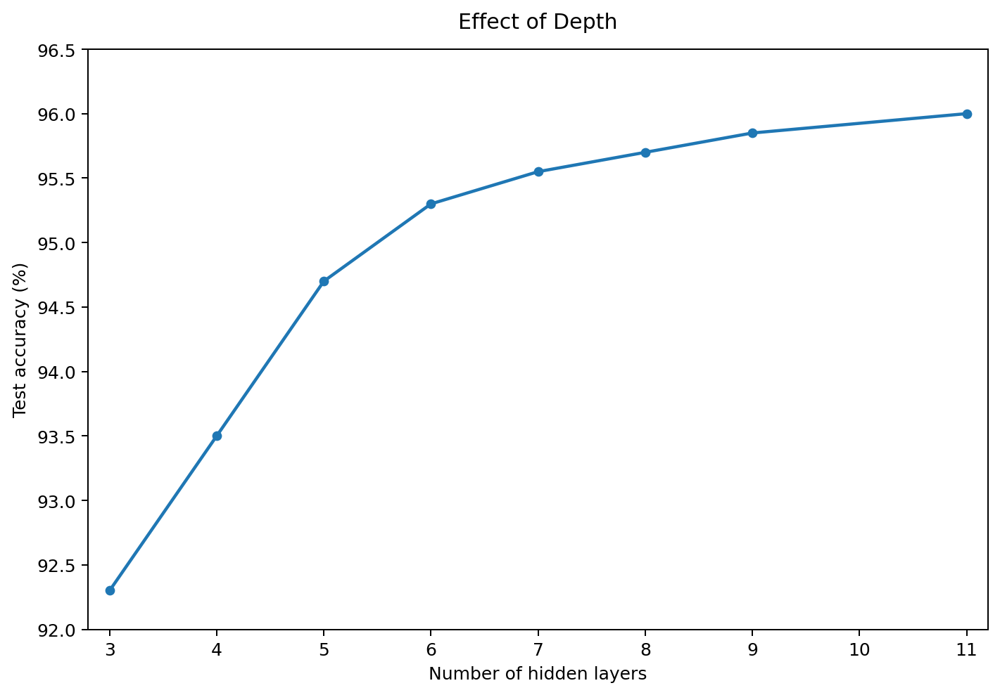
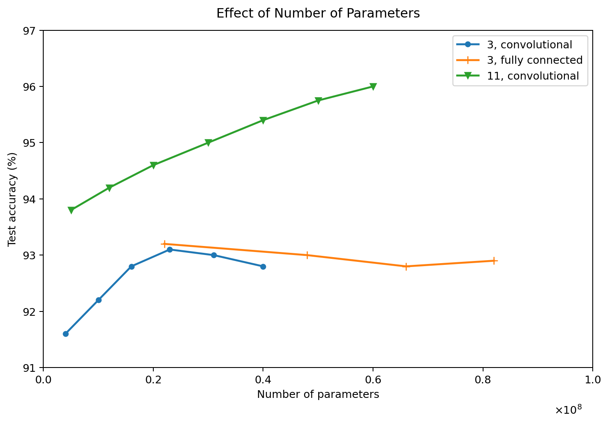

Universal Approximation Theorem
Universal Approximation Theorem (Hornik et al., 1989; Cybenko, 1989)에 따르면, 충분한 hidden units들이 있다면 hidden layer 하나와 nonlinear activation function으로 매우 많은 종류의 함수를 근사할 수 있다.
하지만 모든 종류의 함수를 실제로 학습할 수 있다는 보장은 없다. 그 이유는 다음과 같다.
- Optimization 과정에서 적절한 parameter를 찾지 못할 수 있다.
- Training data에 overfitting이 발생할 수 있다.
또한 하나의 hidden layer만 사용한다면 layer의 width가 매우 크게 증가할 수 있다.
입력이 \(v \in \{0,1\}^{n}\) 일 때 가능한 binary input은
개 존재한다. 일반적인 binary function을 표현하기 위해서는 최악의 경우 \(O(2^n)\) 정도의 자유도가 필요할 수 있다. 따라서 하나의 매우 넓은 layer를 사용하는 것보다 depth를 증가시킨 신경망 구조가 더 효율적일 수 있다.
“A feedforward network with a single layer is sufficient to represent any function, but the layer may be infeasibly large and may fail to learn and generalize correctly.”
Depth와 표현력
Piecewise linear network에서는 network의 depth가 증가함에 따라 표현할 수 있는 linear region의 수가 매우 빠르게 증가할 수 있다.
- \(d\): 입력 차원
- \(l\): network depth
- \(n\): 각 hidden layer의 unit 수
ReLU network에서는 depth가 증가할수록 linear region의 수가 지수적으로 증가할 수 있다. 즉 depth를 증가시키는 것은 단순히 layer를 추가하는 것이 아니라, network의 표현력을 크게 증가시키는 역할을 한다.
Maxout Network
Maxout network에서도 유사한 특징을 확인할 수 있다.
- \(k\): 한 maxout unit이 비교하는 filter 수
- \(l\): network depth
- \(d\): 입력 차원
이 결과에서도 depth가 증가하면 network가 표현할 수 있는 복잡성이 매우 빠르게 증가할 수 있음을 알 수 있다.

“Using deep architectures does indeed express a useful prior over the space of functions the model learns.”
Other Architectural Considerations
많은 신경망 구조는 task의 종류에 따라 다양하게 설계될 수 있다. 예를 들어 computer vision에 사용되는 CNN, sequence processing에 사용되는 RNN처럼 문제의 특성에 따라 network architecture가 달라질 수 있다.
Skip Connection
각 layer가 반드시 chain처럼
순서로만 연결될 필요는 없다.
어떤 architecture에서는 \(i\)번째 layer에서 \(i+1\)번째 layer로 가는 기본 연결뿐만 아니라 \(i+2\), \(i+3\)번째 layer로 직접 연결되는 경로를 추가할 수 있다. 이러한 연결을 skip connection 이라고 한다.
Backpropagation 과정에서 gradient는 출력층에서 앞쪽 layer까지 전달된다.
일반적인 chain structure에서는 chain rule에 의해 여러 derivative가 연속적으로 곱해진다.
Network가 깊어질수록 많은 derivative가 연속적으로 곱해져야 한다. 하지만 skip connection이 존재하면 gradient가 더 짧은 경로를 통해 앞쪽 layer까지 전달될 수 있다.
Sparse Connection
두 layer를 연결할 때 모든 neuron을 서로 연결할 필요는 없다.
예를 들어 입력 neuron이 4개, 출력 neuron이 3개라고 하자.
Fully connected layer라면 weight의 개수는
개다.
하지만 모든 연결이 필요한 것은 아니다. 필요한 neuron끼리만 연결하는 구조를 sparse connection 이라고 한다.
Sparse connection을 사용하면 connection의 수가 감소하므로 parameter의 수와 계산량을 줄일 수 있다.

위 실험을 통해 단순히 parameter의 수가 많다고 해서 test accuracy가 항상 높아지는 것은 아니라는 점을 확인할 수 있다.